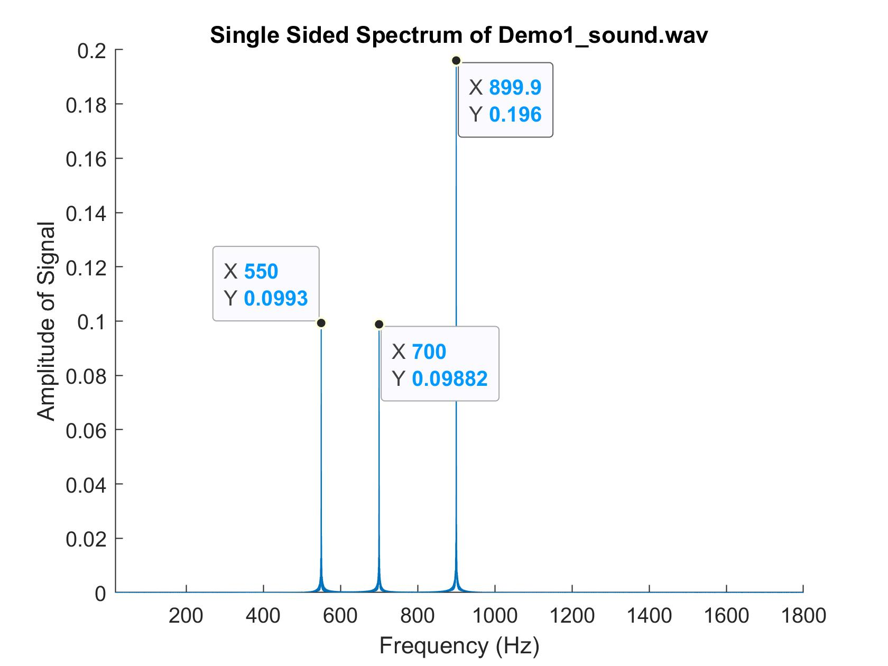
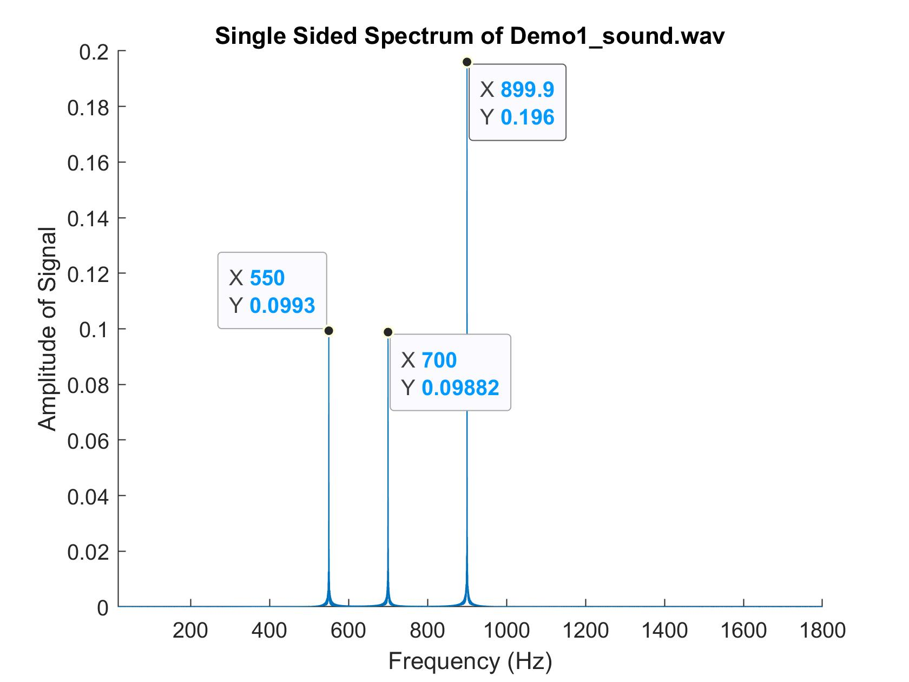

Obstacle-Avoiding Robot
Over the course of four labs, I worked on a robot that used photoresistors to follow light, used passive and active filters to react to specific frequencies, and an ultrasonic sensor to navigate a maze. I used an Arduino Nano Every and LTSpice was used to simulate the filters. This robot was a part of the ECE 3400: Intelligent Physical Systems course at Cornell University.
 


Project Website
Lab 1: Light Following Robot Part 1
Objectives:
- Learn to program the Arduino.
- Use photoresistors in conjunction with the Arduino to setup the light sensing component of your light‐following robot keeping in mind the following behaviors:
- When the robot will be in normal lighting conditions, or when there is too much light everywhere, the robot will turn around in place, not knowing where to go.
- When bright (brighter) light hits the robot from one side or the other, it will move towards it until the bright light is turned off again or the light faces the robot, at which point the robot will move towards it.
Materials:
- 2 x CdS photoresistors
- Arduino Nano Every
- 2 x 10kOhm resistors
- Jumper wires
- Breadboard
- Smartphone flashlight
Part 1: Install the Arduino IDE:
Part 2: Controlling the Arduino's Onboard LED:
Part 3: CdS Photosensors:
I made a circuit based on the Fig. 5 in the lab document. R1, the pulldown resistor, was 10kOhms. Vin was connected to the +5V pin on the Arduino, the 0V was connected to the GND pin on the Arduino, and the Vout was connected to the analog pin A0.
To calculate the current drawn for the circuit, I first looked at the datasheet for the CdS photosensor. The maximum resistance was 0.5MOhms when it was dark; when light, the maximum resistance was 33kOhms and the minimum resistance was 16kOhms. Then, I just used Ohm's law V=IR to find the current for each of these three resistances. The currents calculated are below:
| Lighting Condition | Total Resistance | Current |
|---|---|---|
| Dark | 510kOhms | 9.8uA |
| Light (dim) | 43kOhms | 0.12mA |
| Light (bright) | 26kOhms | 0.19mA |

To be able to read the output from the circuit, I downloaded CdS_ReadA0.ino from Canvas.
However, before I could properly understand the output from this sketch, I needed to determine
Vref to be able to find the value of Vin, the signal we're trying to read,
from the equation below.

I made the sketch readADC_CTRLCbit.ino from the code provided in the lab handout. When
I ran this code, the Serial port displayed 01, as expected. This meant that VDD
was selected as the REFSEL for the ADC. To find Vref, I connected 3.3V directly to the A0 pin
and then measured the analogRead value from the A0 pin. The following is the data from the
Serial Monitor.

Using the ADC result equation from earlier, we can now calculate that Vref is 4.72V.
For the original circuit in Figure 5 and the knowledge about Vref, I calculated possible
analogRead values. Since the circuit is a voltage divider, I used the voltage divider
equation to calculate the possible Vout voltages. Then, I used this voltage as the
Vin voltage in the ADC result equation above. The findings are in the table below.
| Lighting Condition | Voltage at A0 | analogRead Value |
|---|---|---|
| Dark | 0.098V | 21.24 |
| Light (dim) | 1.163V | 252 |
| Light (bright) | 1.923V | 417 |
By reconnecting the A0 pin to the Vout of the circuit from Figure 5 and running the
CdS_ReadA0.ino sketch, I took the analogRead values when the sensors were
in normal conditions and then when a flashlight was pointed at it. The results are in the table below.
While the values from the previous table and this table don't match, this could be due to variations
due to the real life environment.
| Lighting Condition | analogRead Value |
|---|---|
| Dark | 60 |
| Normal | 614 |
| Flashlight | 885 |

I then built a second circuit from Figure 5 and connected the Vout of the circuit to the A1 pin of the Arduion.

Part 4: Coding to Control the Robot:
To avoid constant recalibration while moving the robot, I used Normalized Measurement for each sensor. The equation for the left sensor is shown below.

I made a new sketch called CdS_ReadA0A1based on CdS_ReadA0. For this new
sketch, I added functionality to read the new analog pin A1. I mapped A0 to the left and A1 to the right.
I also added calculations for the normalized measurements for both the left and right sides. To ensure that
there were no rounding errors for these variables, I had to cast the analogRead values to
floats during the calculation. I then wrote these values to the Serial Monitor to get an idea of what the
thresholds would be. There was a delay of 1 second between each print to the monitor.
Video of the photoresistor activity ( https://www.youtube.com/watch?v=bvgcoYdtM2o ).
Conclusion:
This lab was fairly simple and I was able to get everything working without much difficulty. The only
confusing part was that the values calculated for the analogRead for different lighting
conditions was very different than what I actually saw on the Serial monitor. However, I believe that I
have a good base for the next lab of getting the robot to move according to these sensors.
Lab 2: Light Following Robot Pt. 2
Objectives:
- Integrate Lab 1 CdS photoresistors with the motors and h-bridge and turn it into a light-following robot.
- The robot will do the following:
- In normal or too bright lighting conditions, the robot will turn around in place and blink its onboard LED on for 500ms and off for 500ms.
- When bright (brighter) light hits the robot from one side or the other, it will move towards it until the bright light is turned off again or the light faces the robot, at which point the robot will move towards it in a straight line. The onboard LED stops blinking.
- The above cycle is repeated depending on if the bright light is removed, or if the bright light continues to shine, with the robot adapting as described above.
Constraints:
- Cannot use
delay() - Cannot use any external library
- Cannot use interrupts
Materials:
- 2 x CdS photoresistors
- Arduino Nano Every
- 2 x 10kOhm resistors
- Jumper wires
- Breadboard
- Smartphone flashlight
- L293D chip
- AA and 9V batteries
- Robot frame
Part 0: Playing with the ADC:
To begin, I had to figure out the timing of the ADC process. First, I found the default value of the
prescaler by making a sketch that read the appropriate bits from the CTRLC register of the ADC. The bits
I needed from ADC0.CTRLC were bits 0, 1, and 2. To do this, I simply modified the code from
readADC_CTRLCbit and changed the bit values that were being read. This new sketch was
readADC_prescaler. I found the prescaler value to be 0b0110, or 0x6. This means that the
default is CLK_PER divided by 128.
The next part of the lab was identifying the prescaler that fixes the value of CLK_PER. To do this, I read bits 1 through 4 of the MCLKCTRLB register of CLKCTRL and found that it was 0b0000 or 0x0. This meant that the prescaler value would be 2. However, the Prescaler Enable (PEN) bit was set to 0, meaning this prescaler was not used. Thus, CLK_PER is the same frequency as CLK_MAIN, which is 16MHz.
With all of this information, I could calculate the default CLK_ADC value, which was 16MHz/128 = 125kHz. The maximum ADC clock frequency is 1.5MHz, meaning that the smallest prescaler value is 16MHz/1.5MHz = 10.667. This value is not a possible prescaler value, so the actual minimum possible prescaler would be 16.
After this, I tested various ADC prescaler values to see how fast the ADC could actually be operated. I
connected +3.3V to the A3 pin and ran ADC_SingleConvClass. I changed the prescaler value and
observed the reading of the A3 pin. The results are below.
| Prescaler Value | Serial Output |
|---|---|
| 2 | 1023 |
| 4 | 1023 |
| 8 | 714 |
| 16 | 712 |
| 32 | 716 |
| 64 | 714 |
| 128 | 712 |
| 256 | 712 |
The output failed to give the expected value when the prescaler was less than 8. This is probably because when these prescalers are used, the ADC does not have maximum resolution, causing the recorded values to be off.
Part 1: Familiarizing Myself with the H-Bridge:
I used figure 2 from the lab handout to connect properly connect the Arduino to the motor controller. Vcc1 was connected to 5V (from the Arduino) and Vcc2 of the motor controller was connected to the 4.5V battery. All of the grounds were connected together. For the first motor, ENA was connected to Arduion pin D6 (one of the PWM pins), IN1 was connected to D10, and IN2 was connected to D9. For the second motor, ENB was connected to D5 (a PWM pin), IN3 was connected to D18, and IN4 was connected to D17.


I referenced the code provided in the handout and used analogWrite() and
digitalWrite() to make the motors spin in the following configuration:
- Both wheels turning together forward.
- Both wheels turning together backward.
- Both wheels turning in opposite direction of one another.
- Both wheels coming to a full stop.
The photoresistors were not used for this part.
Video of the wheels spinning.
Part 2: Calibrating the Motors:
For this part, I had to calibrate the motors so that the robot (named Jobert) would run in a straight line. To do this, I simply coded the wheels to make the robot roll forward and looked at its behavior. If Jobert turned, I added a small value to the pin connected to the output of the respective motor.
Video of the Jobert rolling in a straight line.
Part 3: Incorporating the Photosensors:
This was the part where everything came together. The following behavior was implemented:
- When the robot is in normal lighting conditions, the robot will turn around in place, not knowing where to go. The onboard LED on the Arduino will toggle every 500ms.
- When bright light hits the robot from one side, the onboard LED will stop blinking and the robot will move towards the bright light until the bright light is turned off again or the robot has turned sufficiently so that it faces the light, at which point the robot will move towards it in a straight line.
- The above cycle is repeated depending on if the bright light is removed or if the bright light continues to shine, with the robot adapting as described above.
I integrated the code from the previous of lab with the code from this lab. The code checked both the actual
sensor values as well as the normalized values to determine the motor behavior. I implemented functions for
driving forward, backwards, turning left, turning right, and stopping so that I could call them easily.
Since delay() was not allowed to be used, I made a separate function nextState
that kept track of the time and decided when to switch to the next state.
Video of Jobert following light.
Lab 3: Filtering and FFT
Objectives:
Integrate and test passive and active filters using hardware and my computer and compare them to what is predicted. A bandpass filter will be implemented and tested and will be put on the robot in the next lab.
Constraints:
- Cannot use
analogRead()
Materials:
- Capacitors and resistors
- Arduino Nano Every
- Op amps
- MATLAB
- Speakers
- Breadboard
Part 1: LTSpice Basics:
I made both a low pass and high pass filter in LTSpice using R=1.2kOhm and C=0.1uF. The cutoff frequency for both of these filter was 1.3kHz and the dB cutoff value was -3dB (as usual). The results from running the simulation are shown below.


Part 2: Building the Unamplified Microphone Circuit:
After unplugging the batteries and the Arduino, I recreated the circuit for the microphone without amplification, paying close attentiont to the polarity of the microphone. I used R1= 3.3kOhm and C1 = 10uF, as required in the lab handout. The output of this circuit was connected to pin AIN4 (PD4, A6, D20).


Part 3: Coding the Arduino and MATLAB to Characterize Circuits:
First, I set up the Arduino code, freeRunADC_MATLAB.ino. As mentioned before, we were not allowed
to use the function analogRead() since it was too slow. Instead, I manually set up the ADC to be
in Free Running mode. The sampled ADC values had to be converted to a 16 bit value before being sent to Serial.
After this was done, I set up the MATLAB code, readData_INT_Canvas_gtz4.m to fetch data from
the Arduino. This MATLAB file played a sound at 500Hz, collected the Arduino ADC data, ran an FFT on that
data, and plotted the data and its FFT. The graph is shown below.

As seen in the graph above, the magnitude of the signal at 500Hz is very small. This is because there is no amplification or filtering on the microphone circuit.
Part 4: Improving the Microphone Circuit:
I implemented the circuit from the lab handout as shown below. The resistor values are in the following table.

| Resistor/Capacitor | Value |
|---|---|
| R1, R4 | 3.3kOhm |
| R2, R3 | 10kOhm |
| R5 | 511kOhm |
| C1 | 10uF |

I used the same code as the previous section to obtain the time and frequency domain plots of the amplified signal at 500Hz.

The gain of the amplified circuit was calculated by taking Vout/Vin from the amplified and unamplified frequency plots at 500Hz. The gain turned out to be 146.6. The predicted gain was R5/R4, or 154.8.
Part 5: Testing the Low and High Pass Circuits:
After this, I then tested the low and high pass filters that were built in LTSpice in part 1. I first tested the low pass filter by building the circuit and connecting the output of my microphone amplifier circuit into the input of the low pass filter. I ran the same MATLAB code as before but changed the frequency to run from 100Hz to 2000Hz. I saved the data from both the output of the amplified microphone circuit and the output from the low pass filter and then divided these two data sets to find the frequency response. I graphed this frequency response along with the gain from the LTSpice simulation to get the graph below.

I did the same thing again but replaced the low pass filter with a higher pass filter to get the following graph.

Unfortunately, for both of these filters, the experimental frequency response was very far from the theoretical. This may have been due to the breadboard/physical parts (if I nudged the parts, a drastically different response would sometimes appear). Additionally, sampling with my laptop may have caused this problem; looking at the frequency response through an oscilloscope or something might have been better.
Part 6: Banpass Filters:
In this part of the lab, I built a Butterworth 4-pole bandpass filter that was set to pass frequencies between 500Hz and 900Hz. The schematic is shown below. Since I couldn't find 9.1kOhm resistors, I used a 10kOhm resistor instead.

I then went through the same process as before and graphed the frequency response of the band pass filter. While the filter was better than the low and high pass filters, it still wasn't matching what was expected, probably for some of the same reasons as before.

Part 7: Running the FFT on the Arduino:
In the final part of this lab, I ran the FFT of the unfiltered, amplified microphone circuit on the Arduino. Due to the fact that the filters were behaving weirdly, we only used the unfiltered output of the circuit.
To be able to run the FFT on the Arduino, I downloaded the Arduino FFT library. I then modified the Arduino
code (now freeRunADC_ISR_gtz4.ino) to be able to use the ISR to store the
ADC0_read() values and to print out the converted FFT values of 257 time samples to the Serial
monitor. These values were then copied and pasted into a MATLAB script that graphed the FFT output. The FFT
from various sounds are displayed below.


Lab 4: Ultrasonic Sensors and All
Objectives:
Combine everything so far and include an ultrasonic sensor (US) for ranging and obstacle sensing. This lab is split into two parts: robot detecting two objects and robot navigating a maze.
Constraints:
Constraints for Demo 1:
- Cannot use any library other than the FFT library used in Lab 3
- Cannot use functions like
attachInterrupt() - Cannot use the function
delay()or any such blocking function or blocking coding. - Can use PWM for controlling the motors, but to avoid any problem with the timers must use pins D3 (PF5) and D6 (PF4) to do PWM for the motors
- Must use the amplified microphone circuit
- For the video recording, the RX and TX LEDs must remain off at all times
Constraints for Demo 2:
- Robot must not nativate too quickly. It should take the robot at least 3 seconds to travel 30 cm
- All that is asked in Demo 2 must be visible and confirmed in the video.
- Cannot use any library
- Cannot use functions like
attachInterrupt() - Cannot use the function
delay()or any such blocking function or blocking coding. - Can use PWM for controlling the motors, but to avoid any problem with the timers must use pins D3 (PF5) and D6 (PF4) to do PWM for the motors
- Must use the amplified microphone circuit
- For the video recording, the RX and TX LEDs must remain off at all times
Materials:
- 2 x CdS photoresistors
- Capacitors and resistors
- Arduino Nano Every
- Op amps
- MATLAB
- Speakers
- Breadboard
- Smartphone flashlight
- L293D chip
- AA and 9V batteries
- Robot frame
Part 1: Robot Detecting Two Objects:
To begin I added the ultrasonic sensors. The pins were connected to 5V, GND, and pins 9 and 10 for the echo and trigger pins, respectively. Jobert (the robot) remained the same as from previous labs.

To ensure that the US was working, I used the code covered in class to take measurements at distances between 2 and 50 centimeters from the sensor. The results are below. As you can see, the US was very accurate for smaller distances and gradually became less accurate as the distances increased.
After this, Jobert was coded to detect two objects after hearing a certain frequency. Boxes were placed in the configuration below.
The requirements for this demo were:
- The robot will start in place, motionless, with its onboard LED off
- When playing the sound file Demo1_sound.wav from Canvas, the robot will do the following upon detecting the frequency of 550Hz:
- Turn around slowly (4-5 seconds).
- The robot will have the onboard LED on from the moment it detects the object until it stops facing it.
- When the robot stops facing an obstacle, its onboard LED turns off.
- Repeat for the second obstacle.
- After the robot returns to its starting position, it will remain motionless with the LED off forever.
Much of the software was very similar from the previous week's lab. The only thing that was added
was that the ultrasonic distance sensor was added and the interrupts were handled slightly differently
within the loop. Additionally, since delays and code blocks were not allowed, a wait()
function was added to keep track of timing for the US.
Part 2: Navigating Robot:
In the second demo, Jobert was coded to follow a light, much like in Lab 2, and also detect obstacles.
The requirements for this demo were:
- The robot will start in place, motionless, with its onboard LED off, facing north
- The robot will follow a light to the left for approximately 30 cm. The onboard LED will turn off at this point.
- Following the path, the robot will follow the light to obstacle 1. When it gets within 5 cm of the obstacle, the robot stops and the LED turns off.
- The robot will only begin moving again when a light is shown on its right side. The robot will follow the light and the LED will turn off. The robot will follow the path in the diagram above.
- The robot will detect obstacle 2 at a distance of 30 cm and the LED will turn on. After the robot is about 5 cm away from obstacle 2, the robot will stop and the LED will turn off.
- A light will be shown on the left side, causing the robot to rotate left and face obstacle 1 again. At this point, it will stop. The LED will be on for this entire time.
- THe robot will then be lured north by the light, where it will encounter obstacle 3. The onboard LED will be off and it will stop moving.
To implement this part, I first edited the code to remove the FFT and audio sampling capabilites, since it was not needd for this part of the lab. I then reran the code from Lab 1 to recalibrate the CdS photosensors. Since the same area I used previously was not large enough for this demo, I had to change the settings to work with a different lighting setup. Since I tested in the dark, the threshold values for light detection were much lower.
After recalibrating the light detection capabilities, I created a state machine that ran through each of the steps above. At every stage, I checked whether light was detected and whether an obstacle was detected. These were done by calling functions that I made that handled these separately from the main code. Based on the state and the surroundings of Jobert, I then decided his movement. The US code was the same as from demo 1. At first, I tested this by moving the motor manually with my hands and adding print statements to determine whether I was detecting the light and obstacles correctly and going through the staes correctly. After I was sure that the logic was working correctly, I then added in the code to control the motors.
Video of Jobert following light and avoiding obstacles.